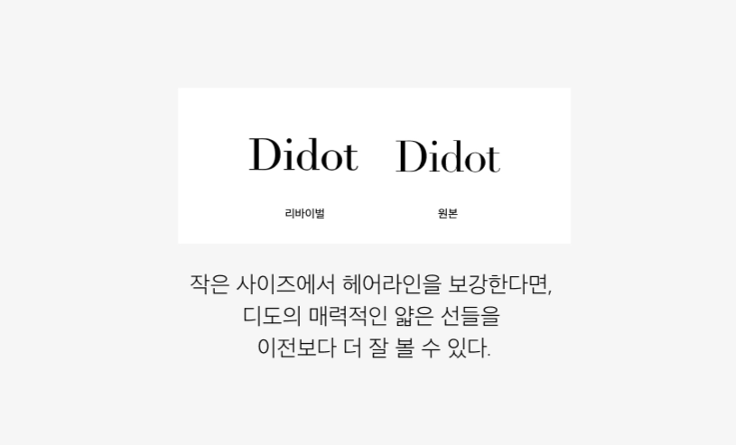
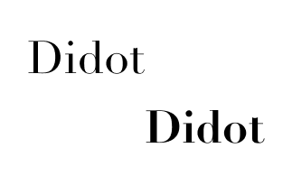
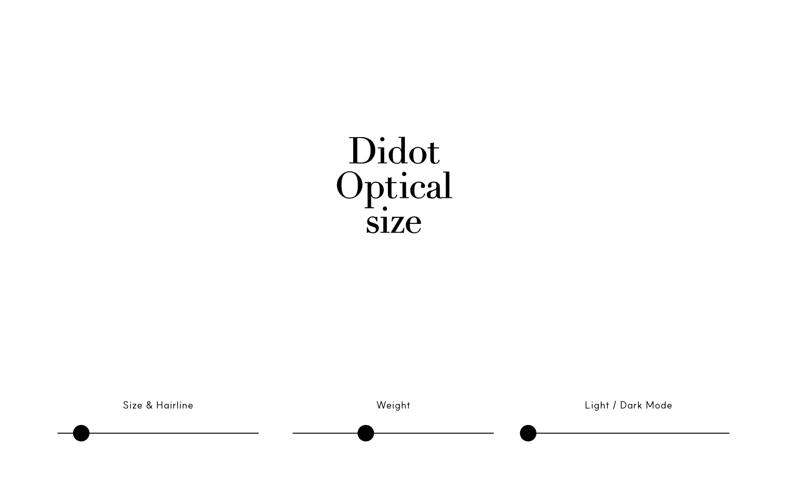

디도 옵티컬 사이즈 리바이벌 소개
18세기 프랑스에서 시작된
우아함의 혁신
디도(Didot)는 프랑스 파리의 인쇄업 가문인 디도 가문의 이름을 딴 서체입니다. 높은 획 대비, 정교한 세리프를 통한 우아하고 날카로운 아름다움이 특징입니다. 정밀한 인쇄 기술과 함께 발전한 디도는 이후 보그와 같은 잡지에 사용되며 패션, 출판, 브랜딩 분야에서 고급스러움과 우아함을 상징하는 서체로 자리 잡았습니다.
디도는 높은 획 대비와 섬세한 헤어라인을 통해 우아하고 세련된 인상을 전달합니다.
굵은 세로획과 얇은 헤어라인의 강한 대비가 시각적 긴장감, 우아함을 만듭니다.
수직 축을 강조한 형태는 정제되고 품격 있는 인상을 전달합니다.
가느다란 곡선과 세리프는 디도 특유의 세련된 분위기를 형성합니다.
균형 잡힌 구조와 세밀한 디테일은 고급스럽고 클래식한 이미지를 완성합니다.
디도는 아름답지만 몇 가지 문제점이 있습니다. 그러한 문제점을 분석하여 개선한 리바이벌 폰트를 소개하는 것이 해당 프로젝트의 목적입니다.
디도의 얇은 획은 작은 크기에서 쉽게 사라지거나 끊겨 보입니다. 이로 인해 글자의 형태가 불안정하게 인식됩니다.
작은 모바일 화면이나 저해상도 디스플레이에서는 섬세하고 날카로운 디도의 디테일이 충분히 표현되지 못합니다.
강한 획 대비와 화려한 형태는 매력을 주지만, 장시간 읽을 경우 독자에게 시각적으로 피로를 유발할 수 있습니다.
크기가 변하면 디도의 특징적인 헤어라인과 세리프가 무너지며, 기존의 우아함도 함께 약해질 수 있습니다.
이번 리바이벌은 디도의 조형적 아름다움과 정체성을 유지하며 현대 디지털 환경에서의 가독성을 향상시키는 것을 목표로 합니다.

디도를 상징하는 수직 축의 긴장감, 특유의 극적인 획 대비, 섬세한 세리프를 유지했습니다.
작은 크기에서도 획이 끊어져 보이지 않도록 작은 사이즈의 헤어라인을 보강했습니다.
큰 크기에서도 획이 둔해 보이지 않도록 굵기를 얇게 조정해주었습니다.
옵티컬 사이즈 폰트
해당 리바이벌에서는 글자 크기에 따라 획 두께가 달라지도록 옵티컬 사이즈 기능을 설계하였습니다.폰트 사이즈가 모두 동일한 사이즈로 변한다면 큰 사이즈에서는 너무 두꺼워지고, 작은 사이즈에서는 너무 얇아지기에 잘 보이지 않으며, 헤어라인의 굵기가 무너지게 됩니다. 따라서 큰 크기에서는 원본의 섬세함을 유지하고자 얇게, 작은 크기에서는 헤어라인을 두껍게 만들어 가독성을 확보하였습니다. 이를 통해 작은 화면이나 저해상도 디지털 환경에서 작은 사이즈의 디도가 끊기지 않도록 하였습니다. 헤어라인이 과하게 얇아지는 것을 막아 시각적 피로감도 낮추어 주었습니다.
이번 리바이벌을 통해 디자인한 디도는 글자 크기에 맞추어서 획의 굵기가 조정되기 때문에 크고 작은 다양한 크기에서 안정적인 읽기 경험을 제공합니다.

